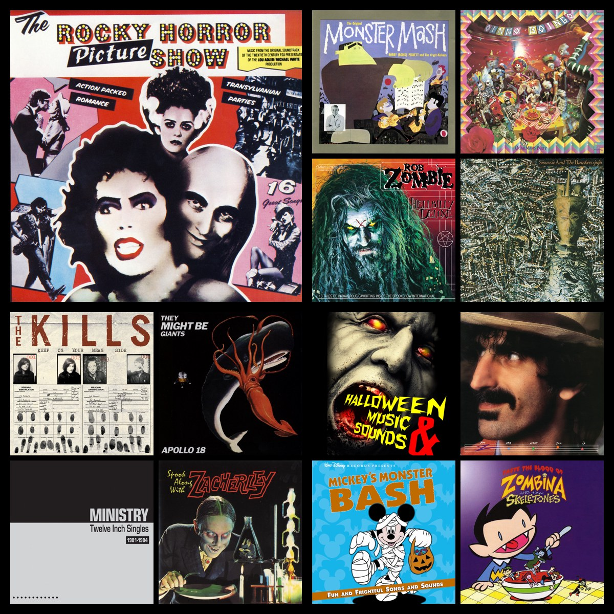
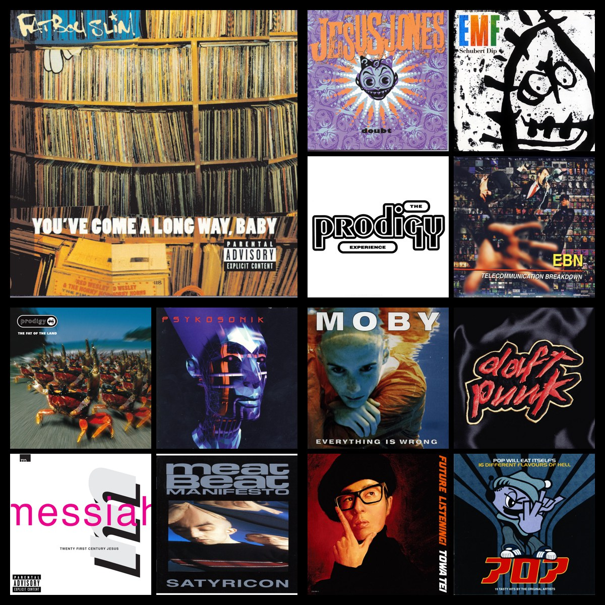
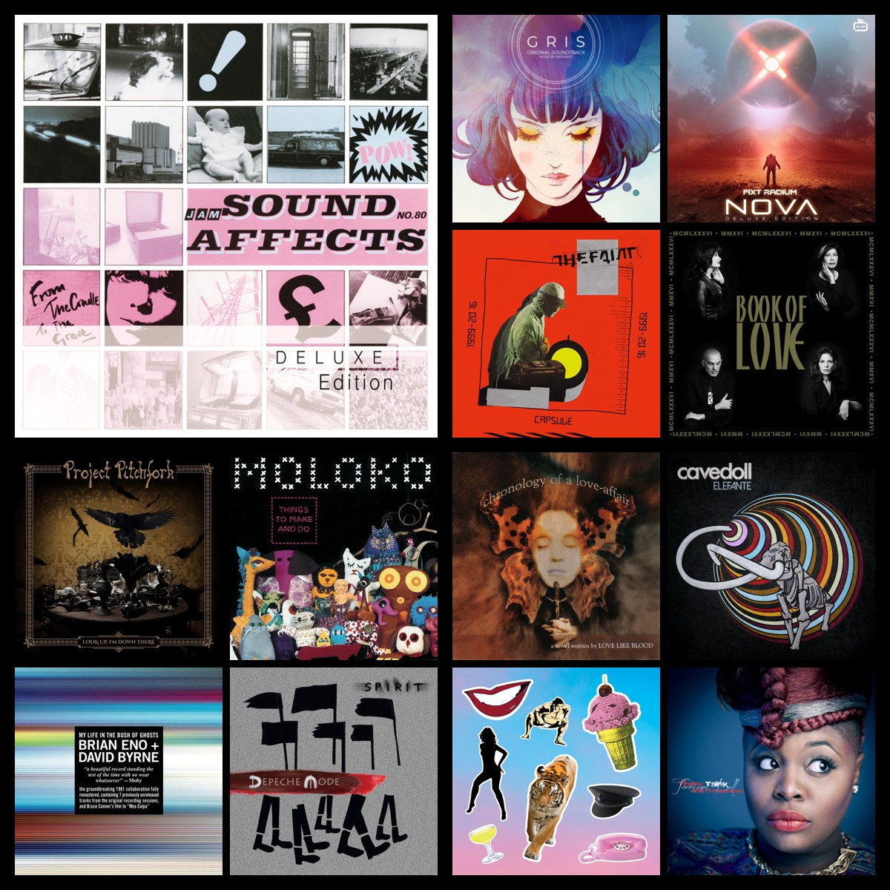
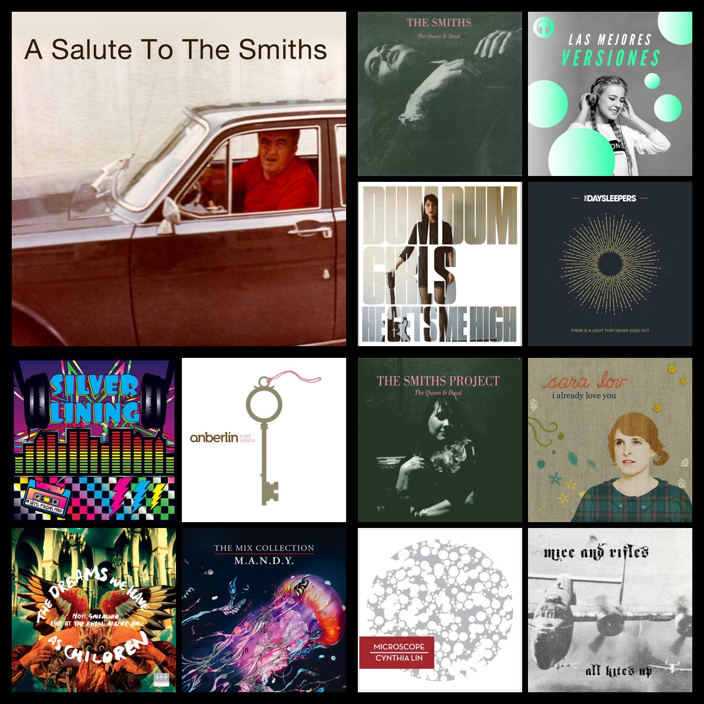
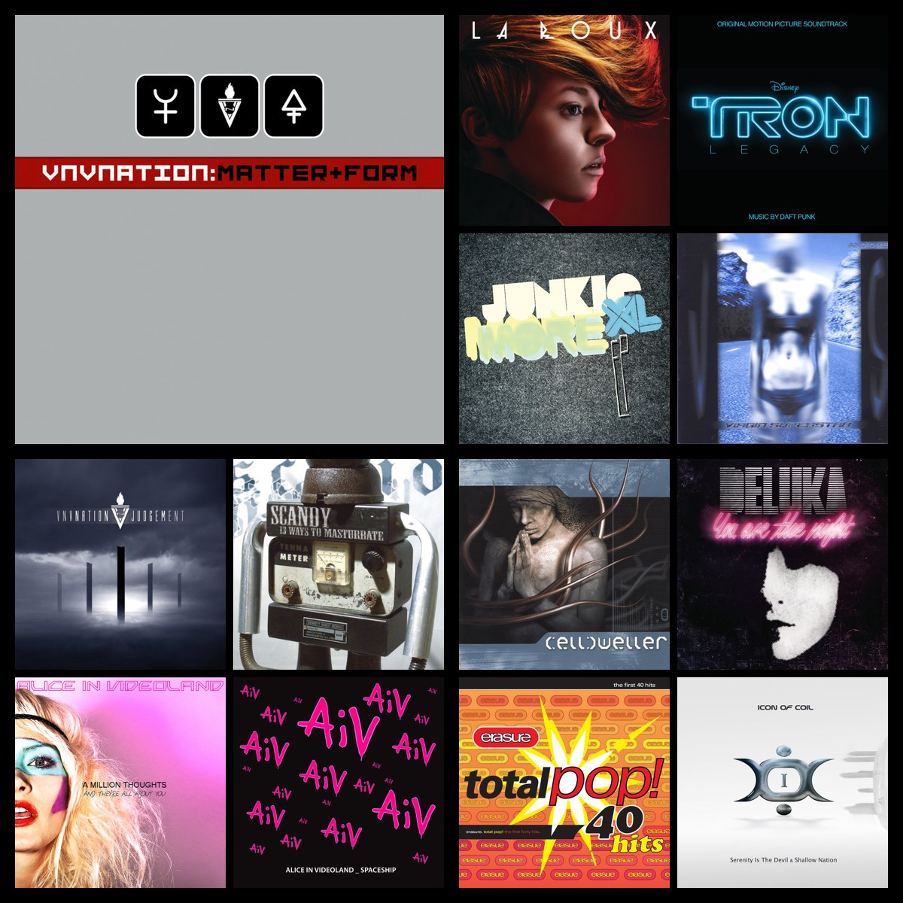
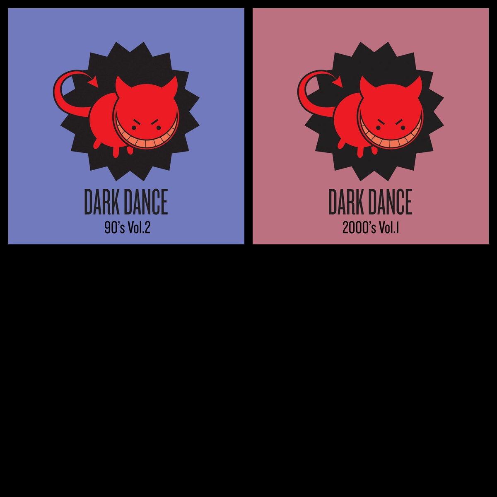

Six generated from actual playlists (of 59) during implementation. Geometry as shipped: 1200×1200, black bg, 20px padding, 20px gap, 10px sub-gap, JPEG q88. This pass confirmed the subjective spacing/framing (approved as-is).






m1 at a larger size — the 20px gaps read as intentional gutters and the black mat framing works. Approved without changes.